nicolas chesnais
art
Je suis passionné par les systèmes en tout genre, particulièrement par les systèmes informatique et les systèmes de mesure. Ma pratique consiste à les disséquer, les critiquer et les retraduire ; questionner les conventions et méthodes de représentations du monde à travers des propositions tantôt poétique, tantôt politique.
Tout est distribué sous licence libre. contact@nchesnais.space

La règle de nanoseconde-lumière permet de mesurer la distance parcourue par la lumière en une nanoseconde, soit en un milliardième de seconde (10-9 s). Ce fragment d’année-lumière mesure exactement 29,979 245 8 cm. Pour former une année-lumière complète, soit une distance d’environ 9 500 milliards de kilomètres, il faudrait emboîter 31,5 billiards d’exemplaires.
Cette distance, à première vue colossale, est pourtant insignifiante quand on la ramène à l’échelle de l’Univers. L’unité de mesure privilégiée des voyages de science-fiction est ainsi décomposée et ramenée à l’échelle humaine. Chacun-e peut télécharger le tracé vectoriel d'un exemplaire d’une règle à lnsr.autre.space et participer à la représentation d’une année-lumière.
En reprenant certains code de la production en masse d'objets, nous pouvons disposer 1328 règles dans un carton, soit l’équivalent de 1,3 microseconde-lumière, puis 729 cartons dans un conteneur, soit l’équivalent de 1 milliseconde-lumière, nous sommes en mesure de calculer le volume approximatif que représenterait la fabrication d’une année-lumière complète.
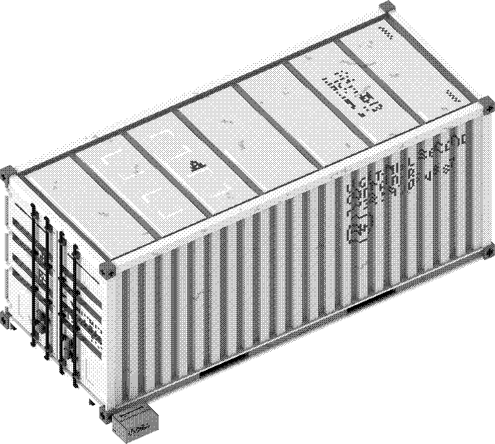
Le gigaconteneur-lumière, composé des 32,5 milliards de conteneurs nécessaires et organisés de manière homothétique, formerait un volume de 19,4 km de long, 7,8 km de large et 8,3 km de haut. Deux animations 3D simulant ce volume sont accessibles sur le site.
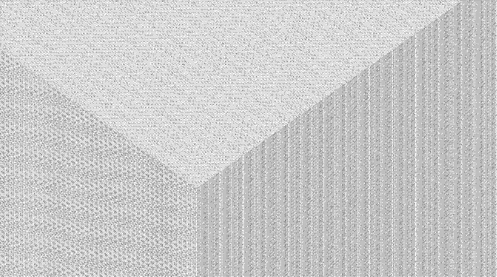
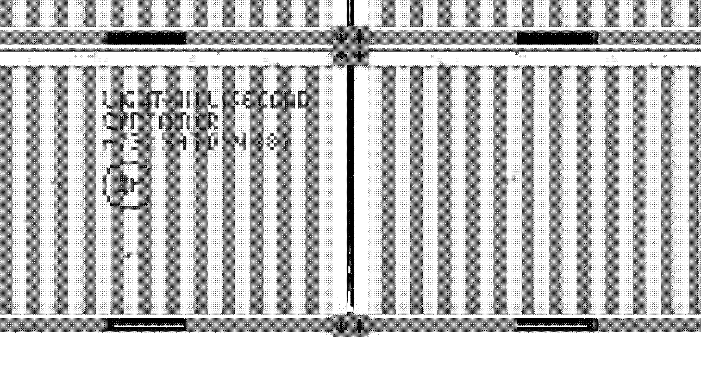
Il semblerait que nous épuiserions des ressources en quantité phénoménale afin de réaliser ce projet absurde. Mais je crois beaucoup en la flemme éternelle de chacun pour que ce fichier reste sur vos disques durs !
site ↑↑↑
Le site n'est toujours pas en ligne, j'essaie de m'y consacrer bientôt.
Un pdf résumant et présentant le projet peut m'être demandé.
- ~light-nanosecond_ruler
-
- /lnsr_n1.object ✓
- Premier exemplaire d’une nanoseconde-lumière. Elle est le point de départ de la future année-lumière.
-
- /lnsr_generator ~
- Un site sur lequel il possible de télécharger les fichiers permettant de fabriquer soi-même la règle ou en commander une. Ce site fait aussi office de compteur général et s’arrêtera lorsque l’année-lumière aura été entièrement téléchargée (soit 31 557 600 000 000 000 clics).
-
- /light-year_gigacontainer ✓
- Le gigacontainer est une forme fictive de production à grande échelle qui donne à voir le volume total que représente les règles. Il est composé de ~24 billions de conteneurs répartis de manière homothétique.
-
- /50s_dezoom.video ✓
- Réalisation d’une video dézoomant sur le gigacontainer. 50 s - loop.
-
- /19km_travelling.video ✓
- Travelling de 19 km sur la longueur du gigacontainer. 5 h 32 min - loop.
Exposition :
La règle n°1, réalisée à la découpe laser dans du PMMA, à été exposée avec un dispositif lumineux à l'Espace Multimédia Gantner du 7 novembre 2015 au 23 janvier 2016 à l'occasion de l'exposition collective Apparitions – Révélations, une exploration de la lumière.
->Visite virtuelle de l'expo
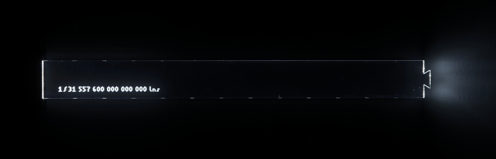
Vous vous trouvez le 18 mai 2016 à Reykjavik, en Islande, aux coordonnées 64°08’07” Nord et 21°53’43” Ouest ; à votre poignet ou dans votre poche se trouve un petit cadran solaire numérique, composé d’un écran, d’un récepteur GPS et d’un micro-contrôleur : c’est l’instrument de géo-temps variant (IGTV). On observe dans cette région de la Terre des différences extrêmes entre la durée des jours et des nuits qui permettent d’éprouver pleinement les caractéristiques de cet instrument. À cet endroit précis, le nycthémère se partage approximativement en 18 heures et 49 minutes de jour, et, par conséquent, 5 heures et 11 minutes de nuit. L’IGTV va convertir chacune de ces durées en 12 heures, à l’instar du système des heures inégales romaines et grecques, utilisé jusqu’à la fin du Moyen Âge.
En divisant la durée du jour (18 h 49 min, soit 67 740 secondes) en 12 heures (43 200 secondes), on obtient la valeur suivante : 1 seconde variable du jour (notée 1 ~sjour) équivaut à environ 1,57 seconde constante (notée 1 s). De la même manière, 1 ~snuit représente 0,43 s (5 heures 11 minutes divisées par 12 heures). Lorsque 1 seconde variable de jour s’incrémente, il s’est écoulé 1,57 seconde constante (~s est plus lente que s) et la nuit, lorsque 1 seconde variable s’incrémente, il ne s’est écoulé que 0,43 seconde constante (~s est alors plus de deux fois plus rapide que s).
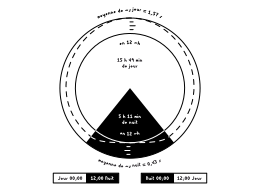
L’IGTV opère également un changement de rythme de la seconde variable, pour lisser le passage de la valeur de ~sjour à ~snuit : plutôt que de passer brusquement de l’une à l’autre (de ~s = 1,57 à 0,43 au moment du coucher du soleil par exemple), l’instrument calcule une intégrale à l’intérieur même de la journée de manière à ce qu’au moment du coucher et du lever de soleil, 1 ~s soit égale à 1 s. La valeur de la seconde variable (irrégulière) va elle-même varier au cours de la journée et ne sera dès lors plus absolue elle-même. Elle sera égale à 1s au lever, augmentera progressivement jusqu’à atteindre un pic supérieur à la valeur précédemment calculée, 1,57s en milieu de journée, puis diminuera jusqu’à atteindre le palier de 1s au moment du coucher et évoluera de manière inverse durant la nuit et ainsi de suite.
variation de ~svar sur le nycthémère
Un troisième niveau de variation apparaît lorsque vous vous déplacez car vous intervenez dès lors dans un autre espace, un ailleurs qui n’a plus les mêmes durées de jour et de nuit. L’IGTV recalcule en permanence la valeur de la seconde variable selon votre position géographique précise récupéré par le GPS et affiche continuellement une heure propre au point géographique auquel vous vous trouvez. Il traduit un temps local.
Vous pouvez lire l'article complet publié dans la revue Tout pour plus d'informations et interrogations.
site ↑↑↑
L'instrument est toujours en développement, le code est accessible sur github et est d'ors et déjà exploitable en l'état même s'il manque une doc qui ne devrait plus trop tarder. Nous tentons actuellement de réaliser la première version standalone, un peu miniaturisée avec des premiers essais de traductions graphique sur un écran à encre.
- ~/instrument_de_géo-temps_variant
-
- /igtv-arduino ~
- version électronique et portative de l'instrument.
-
- /igtv-web ×
- version web de l'instrument.
-
- /horloges_variables ×
- portage du principe de l'igtv sur des horloges fixes pour définir l'heure d'un lieu en particulier sur lesquelles on peut se synchroniser pour partager une heure commune.
-
- /carte_de_variation_de_la_seconde_variable ×
- représentation graphique 3D de la valeur actuelle de la seconde variable sur la surface de la Terre.
-
- /IGTV-Technis&Politique ~
- Tentative de définition technique et politique des concepts liés et produis par la mesure du temps de l'igtv.
Parutions :
Il est possible de lire mes interrogations liées à la mesure du temps dans le tuto Hacker le temps, édité dans la revue Tout, ainsi que dans la 3ème partie de mon mémoire de fin de cursus.
Les dessins des constellations tels que nous les connaissons appartiennent à une époque révolue ; ils ne sont que la simple anamorphose d’un tracé beaucoup plus complexe qu'il est désormais possible de mettre en lumière.
En récupérant la position des étoiles d'une constellation par rapport au Soleil, il est possible de modéliser un volume à facettes dont chaque sommet sera associé à la position « exacte » – d’après nos actuelles observations issus des calculs du satellite Hipparcos – de chacune des étoiles dans l'espace. Libérée du point de vue terrestre, la constellation retrouve dès lors sa troisième dimension.
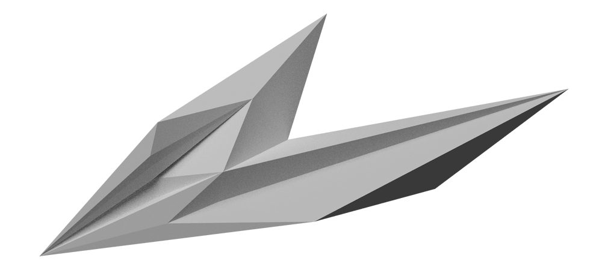 [modélisation de la Grande Ourse]
Grâce à cette modélisation, de nouvelles formes et traductions sont envisageables : matérialiser les constellations grâce à une impression 3D à échelle extrêmement réduite, tenant dans la main ; associer en un volume global toutes les constellations et produire ainsi une carte/objet en trois dimensions de la sphère céleste ; ou encore, observer la déformation opérée par l’anamorphose d'un point de vue autre que celui de la Terre.
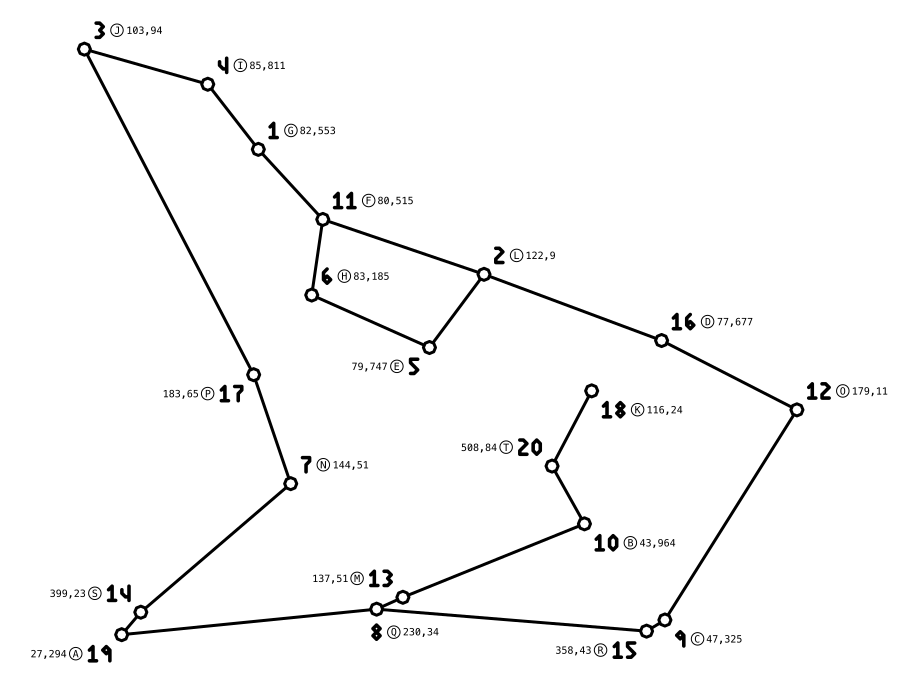 [dessin de la Grande Ourse]
Il n'existe pas de convention ni de sélection officielle d'étoile définissant le dessin d'une constellation. La sélection des étoiles pour ce projet suis une méthode basique, chacune des étoiles possède une magnitude inférieure à 6 (au delà une étoile n'est pas visible à l'oeil nu) et sélectionne arbitrairement un nombre suffisant d'objets dans l'ordre de leur magnitude (aucune étoile ayant une magnitude inférieure à la plus faible n'a été rejetée) afin de trouver un dessin littéralement similaire à leur nom. La modélisation 3D est elle aussi arbitraire quoique générique (les faces partant du Soleil tente d'englober l'ensemble d'étoiles et se referme derrière).
site ↑↑↑
Projet interrompu au stade de prototype pour 8 constellations.
Pourrait être repris et automatisé à l'occasion des résultats du satellite Gaia dont le catalogue est attendu pour 2020.
- ~/objets_célestes = [
- 5-Cetus
- 38-Ursa Major
- 42-Hydra
- 53-Microscopium
- 73-Norma
- 77-Sculptor
- 80-Mensa
- 82-Telescopium
] -
- /modèles3D ✓
- modélisation des constellations, disponibles aux formats .dae & .stl sur le site.
-
- /cartes ✓
- propositions et reprises de dessins se référant aux noms des constellations.
-
- /impressions3D ✓
- prototypages d'impressions 3D des volumes à échelle extrêmement réduites.
-
- /exo-grande_ours ✓
- carte de l'anamorphose de la Grande Ourse vue depuis Gliese 667C.
-
- /volume_céleste ~
- matérialisation du volume global de toutes les constellations assemblées.
-
- /atlas ×
- atlas du ciel
-
- /atlas_extra-terrestre ×
- prendre une exoplanète potentiellement propice à la vie, repérer ses étoiles les plus brillantes et tenter d'inventer ses constellations comme pourrait le faire un colon.
Parutions :
Une petite double page dans Code 2.0 vous propose de dessiner la Grande Ourse vue depuis Gliese 667C.
graphisme
Je suis à la recherche d'un dessin simple, où la grande majorité de l'information passe par la forme. Cela se traduit par un graphisme minimal, autant dans une recherche d'économie de moyen que d'influence des mouvements de contre-culture et de l'esthétique contrainte des débuts de l'informatique.
Je m'intéresse particulièrement aux moyens de représentation du monde, influencé par toute l'imagerie scientifique des schémas aux cartes, et plus récemment à l'occasion des différents projet initiés avec Zanzibar (collectif d'auteur-e-s de science-fiction) par l'illustration abstraite et les nouvelles formes de narrations.
J'expérimente tout type de dessin, print ou web, interactif ou statique, animation, typographie, UI/UX design, patterns, etc.
Vous pouvez me contacter à contact@nchesnais.space pour tout projet/commande.
Pour des projets nécessitant de grosses compétences en programmation et en administration serveur (back-end) je peux m'associer à différentes personnes avec qui j'ai l'habitude de collaborer.
taVitessePlafond
« Se détendre les poings, en rupture de songe sédentaire, pour un trépignant vis-à-vis avec l’idée, ainsi qu’une envie prend ou bouger : mais la génération semble peu agitée, outre le désintéressement politique, du souci d’extravaguer du corps. Excepté la monotonie, certes, d’enrouler, entre les jarrets, sur la chaussée, selon l’instrument en faveur, la fiction d’un éblouissant rail continu. »
Stéphane Mallarmé, l'action restreinte
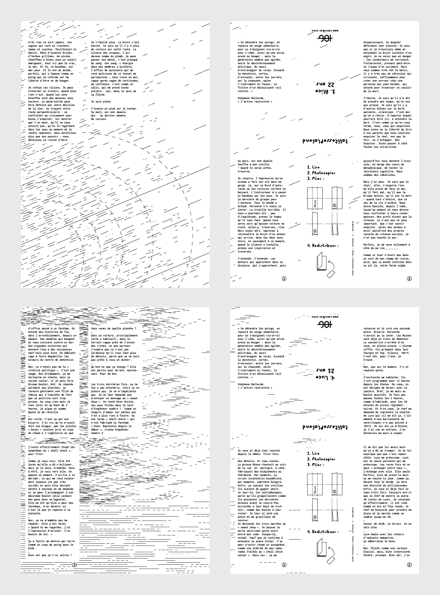 [preview de 2 exemplaires]
site ↑↑↑
Réalisation d'une série de pliages A4 recto-verso pour de courts textes sur le thème de la disparition écrits par différends membres du collectif Zanzibar. Ces textes ne sont diffusés que physiquement et se trouve à l'intérieur d'autres livres dans différentes librairies en France, Suisse et Belgique.
- ~/taVitessePlafond = [
- \1. Alice, 22 ans
- \2. Titus, 24 ans
- \3. Félix, 19 ans
- \4. Luce, 21 ans
]
1000 jours en mars
Le 31 mars 2016 au soir, la Nuit Debout a pété les calendriers. Depuis, le mois de mars s'étire. Personne pour prédire jusqu'à quand il durera.
1000 jours en mars est un projet d'écriture à mille mains, une fabrique bricolée de mille futurs possibles.
1000 jours en mars invite à imaginer collectivement les un-peu-moins de trois années qui arrivent. C'est de la science-fiction en prise directe avec le réel. Un endroit où formuler des espoirs, des attentes, des craintes. Où se raconter, puis raconter aux autres, les histoires de ce qui va se passer.
site ↑↑↑
Réalisation d'un website pour présenter l'évolution quotidienne du projet d'écriture collaborative initié par le collectif d'auteur-e-s de science-fiction Zanzibar. Un parser récupère chaque jour le contenu d'un pad (outil d'écriture collaborative libre) et met en page automatiquement l'ensemble des textes à la manière d'un calendrier.
Avenir(s) d'internet est une série de conférences et d'ateliers autour de la vie privée numérique et de l'auto-hébergement organisée par Hackstub.
Cet événement proposait une réflexion, une critique et un début de solution aux problèmes de la surveillance généralisée pratiquée par les gouvernements et les multinationales tel que Google et Facebook. L'introduction de Jérémie Zimmermann et Léo Henry emprunte aux récits de fiction, connus ou produit pour l'occasion, les mises en garde quant aux dérives possibles ou déjà existantes des pratiques d'accumulation de données personnelles.
La suite d'atelier proposait à une quinzaine de personnes de s'initier aux compétences désormais nécessaires pour se protéger et s'autonomiser au travers d'activités cherchant à briser la barrière technique, source de grande frustration chez bon nombre de personnes.
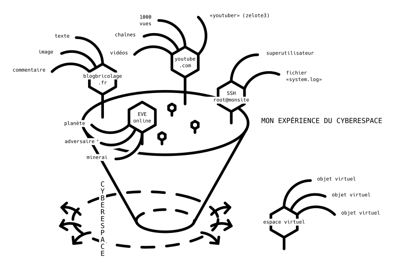
Enfin, une conférence de clôture invitait différents programmeurs et activistes, à l'origine de logiciels ou services fonctionnant de manière décentralisé et proposant à ses utilisateurs une réelle autonomie, à présenter leur projet. Ljf pour YunoHost et la Brique Internet ; Edhelas pour Movim ; Karchnu pour Alsace Réseau Neutre (ARN).
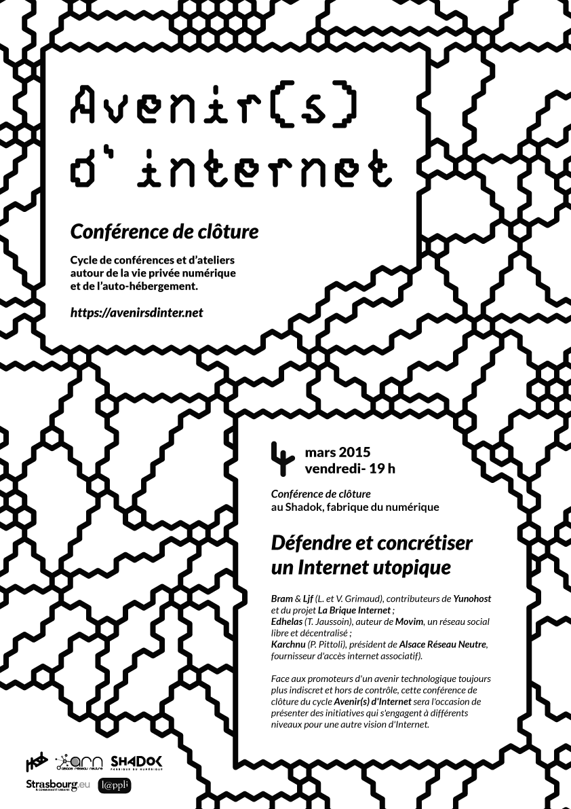
pxph-9
Pixelpath-9 est une font de titrage pixel transposée en son équivalent vectoriel.
À l'origine développée pour light-nanosecond ruler dans ce même jeu de passage entre matriciel et vectoriel, la version pixel répond à la contrainte de produire un dessin lisible avec le moins de pixels possible (une grille de 9 × 5px au total pour des caractères classique de 5 × 3px) ; la version vectorielle en est une simple traduction : un tracé vectoriel passe par le centre (théorique) de chaque pixel afin de proposer une typo linéale.
Une italic existe ainsi qu'une version avec une grille de 14×7px mais il me faudrait les retravailler.
Ô mage aztèque, l'écuyer vêtu d'un kit hawaïen et de bijoux reçut au cœur l'âcre piqûre, de l'île où arrive son frêle canoë.
Ô mage aztèque, l'écuyer vêtu d'un kit hawaïen et de bijoux reçut au cœur l'âcre piqûre, de l'île où arrive son frêle canoë.
Ô mage aztèque, l'écuyer vêtu d'un kit hawaïen et de bijoux reçut au cœur l'âcre piqûre, de l'île où arrive son frêle canoë.
Ô mage aztèque, l'écuyer vêtu d'un kit hawaïen et de bijoux reçut au cœur l'âcre piqûre, de l'île où arrive son frêle canoë.
site ↑↑↑
Les sources ne sont pas encore distribuées. Et j'aimerais réaliser la font pixel en font matricielle mais vous pouvez d'ors et déjà télécharger et utiliser pxph-9.
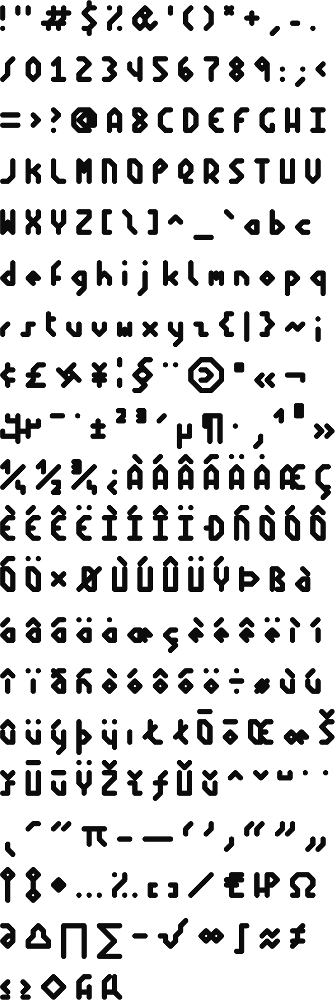
n × 109
n × 10⁹ (à prononcer "n milliards") est une collaboration avec Alexandre Aubin (docteur en physique des particules et ingénieur). Nous organisons et animons notamment des ateliers pour tous âges autour de la programmation et de l'électronique. Nous réalisons aussi ensemble l'instrument de géo-temps variant.
Vous pouvez nous contacter à n-milliards@autre.space ou vous rendre sur notre page GitHub.

nomDuJeu est un transport puzzle, un petit jeu en pixel art extrêmement basique entièrement codé en python avec l'aide de la librairie Pygame. L'objectif est de positionner des blocs à des endroits précis en les poussant.
Nous proposons lors d'ateliers d'initiation à la programmation de réaliser ce petit jeu. Cet atelier propose d'introduire les concepts fondamentaux et la logique de programmation à travers l'élaboration étape par étape d'un jeu text based puis du jeu graphique.
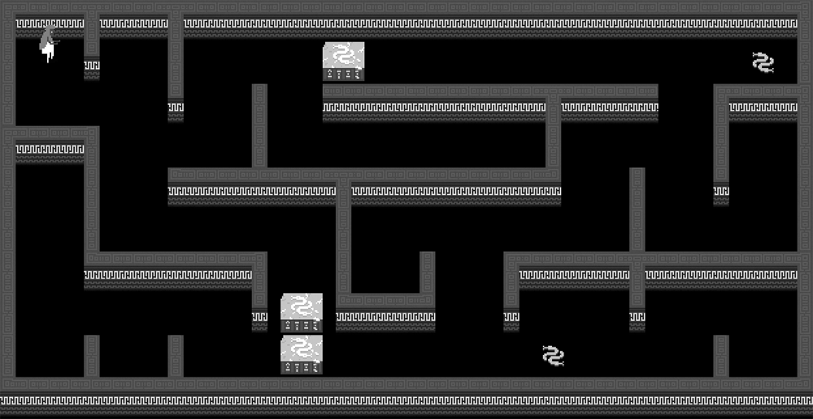
site ↑↑↑
Cet atelier se déroule en 4 sessions de 3h. Nous intervenons à deux pour un groupe de ~8 personnes et s'adresse à un public de plus de 16 ans.
Les supports d'ateliers (slides, schémas, fiches mémos, ...), les exercices et les images sont disponibles sur github pour quiconque souhaiterait le refaire chez lui ou en groupe.
Cet atelier propose une initiation à l'électronique et à la programmation au travers de la robotique et d'Arduino. L'Arduino est un circuit imprimé contenant tous les éléments nécessaires au prototypage rapide de projets électroniques relativement modestes et à petit budget. Il fonctionne avec du logiciel libre et ses plans sont accessibles. C'est un excellent outil pour quiconque souhaiterait comprendre un peu mieux comment l'univers numérique fonctionne et commencer à réaliser ses propres idées.
L'atelier consiste en la fabrication d'un petit robot nommé Wall-eeno, que nous avons développé, qu'il faudra monter puis programmer afin de lui faire parcourir un circuit.
Ce petit robot évolue au fur et à mesure de nos ateliers et il est composé désormais d'un petit bras actionneur et d'un capteur ultrason. Il est capable de s'arrêter devant un obstacle et d'actionner son bras pour ouvrir des portes.
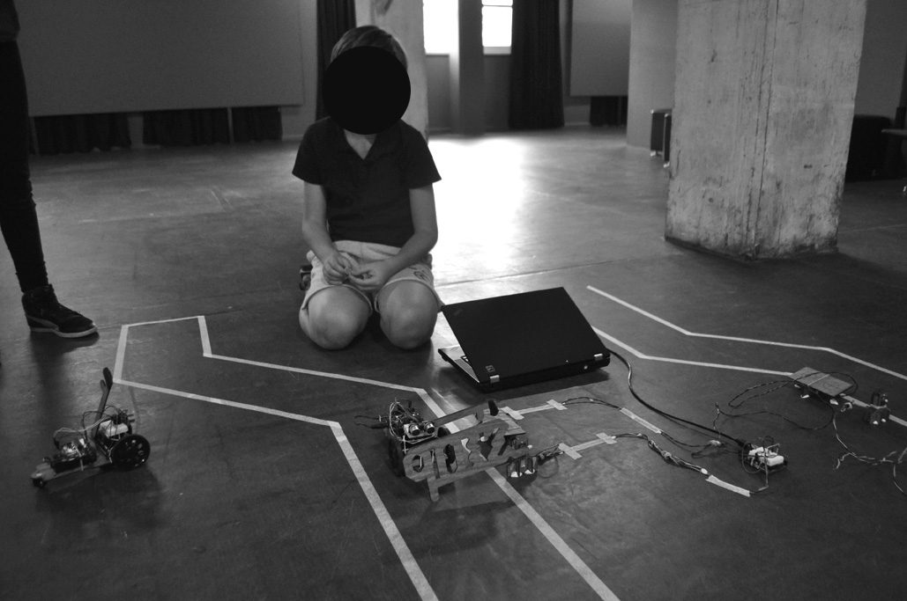
site ↑↑↑
Cet atelier existe sous différends formats suivant l'âge (10 ans minimum), entre 3 et 6h réalisés sur la même journée avec différents objectifs. Nous intervenons à deux pour un groupe de généralement 8-10 personnes, voire un peu moins pour les plus jeunes. Le code du robot, la liste des composants nécessaires et les fichiers vectoriels des éléments à découper sont disponibles sur github pour quiconque souhaiterait le refaire chez lui ou en groupe.
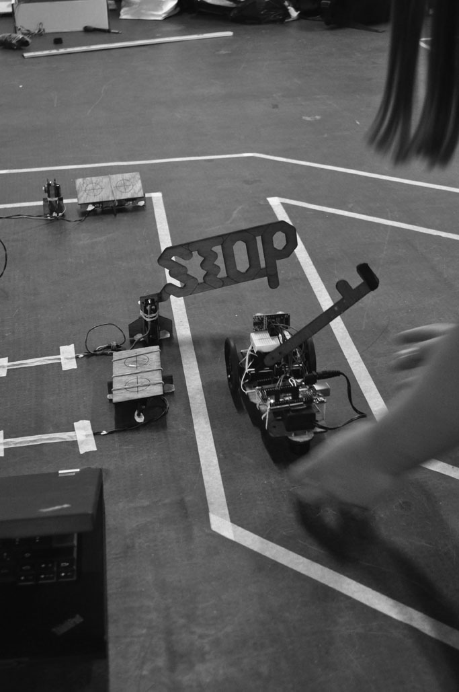